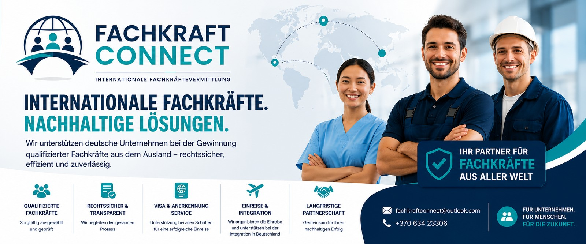

Fachkräftesuche
Geeignete internationale Kandidaten passend zu Ihren Anforderungen.
Fachkraft Connect verbindet deutsche Unternehmen mit qualifizierten Fachkräften aus Drittstaaten – persönlich, strukturiert und zuverlässig begleitet.

Wir begleiten den Weg von der Personalsuche bis zum erfolgreichen Start in Deutschland.
Geeignete internationale Kandidaten passend zu Ihren Anforderungen.
Qualifikationen und Anforderungen werden strukturiert abgeglichen.
Begleitung der notwendigen Schritte im Vermittlungsprozess.
Begleitung bis zum erfolgreichen Start in Deutschland.
Wir unterstützen Unternehmen bei der internationalen Personalgewinnung.
Berufskraftfahrer, Transport und Logistik.
Technische und handwerkliche Fachkräfte.
Produktionsmitarbeiter und Fachkräfte.
Bau, Montage und technische Bereiche.
Internationale Fachkräftegewinnung.
Sprechen Sie uns mit Ihrem Bedarf an.
Position, Anforderungen und Anzahl mitteilen.
Passende Kandidaten suchen und Profile vorstellen.
Interviews, Abstimmung und vertragliche Schritte.
Den weiteren Prozess gemeinsam begleiten.
Auch nach der Vermittlung Ansprechpartner bleiben.
Unser Anspruch ist eine verständliche und zuverlässige Begleitung des gesamten Vermittlungsprozesses.
Schildern Sie uns kurz Ihren Bedarf. Wir melden uns für ein unverbindliches Erstgespräch.
Fachkraft Connect
Inhaber: Marius Viktaravičius
Vyšnių g. 1
LT-70462 Klausučiai
Vilkaviškio rajonas
Litauen
E-Mail: fachkraftconnect@outlook.com
Telefon: +370 634 23306
Fachkraft Connect
Inhaber: Marius Viktaravičius
Vyšnių g. 1
LT-70462 Klausučiai
Vilkaviškio rajonas
Litauen
E-Mail: fachkraftconnect@outlook.com
Telefon: +370 634 23306